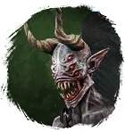
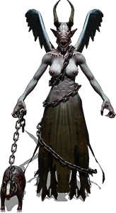

Барсук(физ)
Питомцы / Особые
Открыть в интерактивной вики →

| Прокачка | есть |
|---|---|
| Ранг в стае | 10 |
| Здоровье | 3000 |
| Мана | 1400 |
| Выносливость | 1700 |
Цена
Получение: Во время специальных розыгрышей
Где взять
Выкупается у Дрессировщика Питера  Дрессировщик Питер
Дрессировщик Питер
Дрессировщик Питер